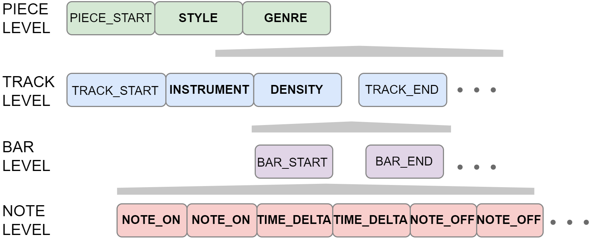

Introduction¶
This section covers the fundamental usage of musicaiz, including a package overview, basic and advanced usage.
Quickstart¶
The goal of musicaiz is to provide a framwork for symbolic music generation. Musicaiz contains 3 basic modules that contains the music basic principles definitions: harmony, structure and rhythm. There are other modules that use these definitions to plot, tokenize, evaluate and generate symbolic music data.
Analyze data¶
Load a MIDI file:
from musicaiz import loaders
# load file
midi = loaders.Musa("../files/mozart.mid")
# get instruments
instruments = midi.instruments
Create data¶
Obtain notes that belong to a chord:
from musicaiz import harmony
# Triad chord build from 1st degree of C major
harmony.Tonality.get_chord_notes_from_degree(tonality="C_MAJOR", degree="I", scale="MAJOR")
# Triad chord build from 1st degree of C major in dorian scale
harmony.Tonality.get_chord_notes_from_degree(tonality="C_MAJOR", degree="I", scale="DORIAN")
Tokenize¶
We can encode MIDI data as tokens with musicaiz. The current implementation supports the following tokenizers:
MMM: Ens, J., & Pasquier, P. (2020). Mmm: Exploring conditional multi-track music generation with the transformer.
{kind=link}